{sample}_QCreport.html (in the figures/ folder): what each step does, what its statistics mean, how to read them biologically, and what to check before calling something a finding. It applies to any run of the pipeline, on any sample or marker panel. Example figures are illustrations from a test run and do not describe a real sample.Report layout.
Sections 2, 3, 5 and 6 list one row per marker set, niche or pair with its key numbers (verdict, z, q; or bins, depth AUROC and number of up-regulated genes); click a row to open its maps, plots and tables, or use Expand all / Collapse all at the top. Printing the report opens every row. Tables scroll inside their box. The report only organizes files in the figures/ folder; nothing is recomputed. Every table links to its full CSV. Running marqual-st gene-pairs -p params.csv -m marker_sets.csv rebuilds the report with section 6 added; marqual-st report -p params.csv rebuilds it on its own.
| Idea | What it means and why it matters |
|---|---|
| Sequencing depth | Reads captured per bin (total_counts). Deeper bins detect more genes of every kind, so any marker score partly measures depth. Every test therefore removes depth: the score is regressed on log(1 + total counts) and only the residual - what depth cannot explain - is tested ("depth-corrected"). |
| Signature score | Per bin, the mean log-normalized expression of the markers present in the data. Markers missing from the data are dropped (see marker coverage). |
| Moran's I | Spatial autocorrelation: do neighbouring bins (the 8 surrounding bins) have more similar scores than random pairs of bins? 0 = no spatial pattern, larger = smoother, more clustered pattern. In sparse data even real niches give small values (often 0.01-0.2). |
| Random-gene-set null | The same statistic computed for many random gene sets matched to the markers in size and expression level (default 1,000 sets). The observed value is judged against this distribution, not against 0: "is there more pattern than ordinary genes of the same expression level show?" Every gene follows tissue architecture to some degree, so this is the meaningful comparison. |
| Empirical p, z | p = share of random sets at least as extreme as the markers (smallest possible value 1/(N+1), e.g. 0.001 with 1,000 sets). z = (observed − null mean) / null SD, an effect size: how many standard deviations above random genes. |
| Simulation noise | An empirical p from N random sets is itself an estimate. Its 95% range is about p ± 1.96·√(p(1−p)/N): with 1,000 sets, p = 0.044 could be anywhere from 0.031 to 0.057. A result this close to 0.05 can fall on either side with a different random seed. |
| FDR q and the test family | Benjamini-Hochberg-adjusted p across all marker sets (or all pairs) tested together in the run - the column n_tested. Adding marker sets makes the correction stricter; removing sets after seeing the results makes it looser. Decide the list of marker sets before looking at results and report all of them. |
| Depth R² | Fraction of the score's variance explained by depth. Small values (e.g. < 0.05) mean raw and depth-corrected scores are nearly identical, so a difference between their verdicts is not a depth effect. |
| Depth AUROC | Probability that a random bin of region A is deeper than a random bin of region B. 0.5 = same depth. Differential expression is run on bins matched for depth, so that AUROC ≈ 0.5. |
Cards give the size and quality of the data after filtering: bins, median total counts and genes per bin, tissue sections (set / found), stray bins, the depth ratio between sections, and how many bins received a cell-type label. The Verdicts table lists every test with its verdict and the numbers behind it (z, p, q, the number of random gene sets, depth R²). A note above the table states which marker sets and pairs form each FDR family.
| Colour | Verdicts | Read as |
|---|---|---|
| green | PASS, CO-LOCALIZED | Significant at FDR q < 0.05. |
| red | NO_SPATIAL_SIGNAL, DEPTH_DRIVEN, MASKED_BY_DEPTH, SEGREGATED | No structure beyond random genes, or a depth-specific pattern (see section 2). SEGREGATED is a significant result - the two cell types avoid each other. |
| uncoloured | NOT_DISTINGUISHABLE_FROM_RANDOM | No evidence of co-localization or segregation. |
What it does. Marker-independent. Finds tissue sections and stray pieces on the unfiltered bins (so holes left by filtering cannot split a section), then filters bins and genes, then maps depth on the filtered bins. Files: technical_qc_summary.csv, stray_pieces.csv, section_depth_summary.csv (only when sections are a technical variable), and two maps.
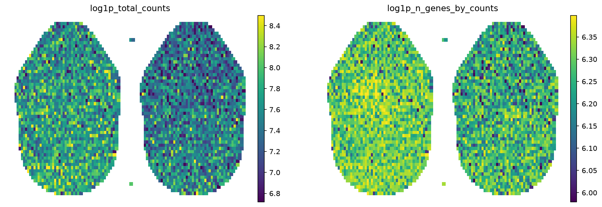
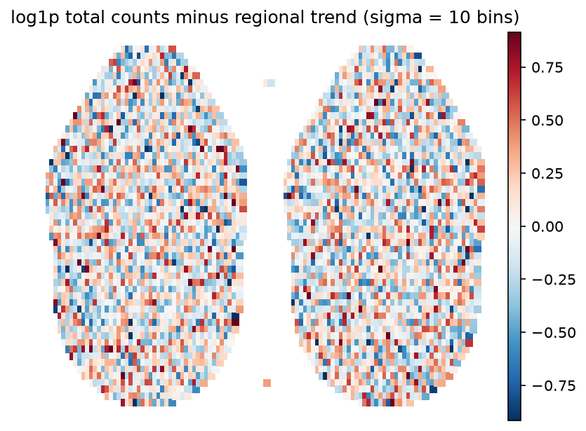
obs["stray"]), never removed.sections.num_tissue > 1) are the largest connected pieces. With sections.tissue_qc on, they are a technical variable: their depth is compared and co-localization is re-tested within sections (section 5). Turn it off when sections are biologically different (e.g. disease stages) - otherwise real differences are removed.What it does. For each marker set: signature score per bin → Moran's I of the score, and of the depth-corrected score → each compared against the random-gene-set null. The index table all_celltypes_moran_index_table.csv holds the results, FDR across the marker sets of the run (n_tested), and the qc_verdict.
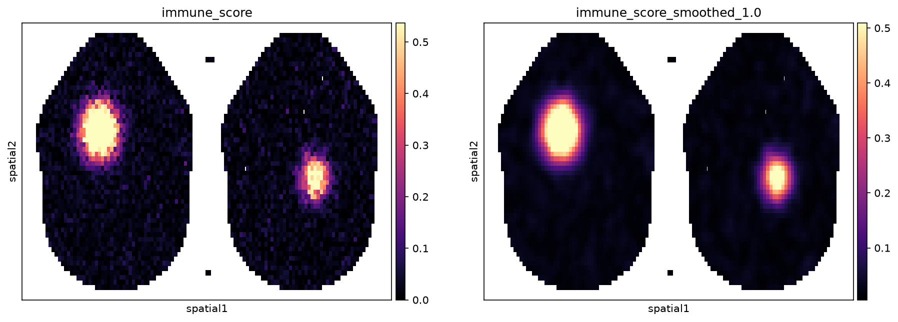
{celltype}_moran_stats.csv) is shown for reference only. With ~105 bins it is ≈ 0 for almost any I > 0: it asks "is there any spatial pattern at all?", and in tissue the answer is always yes. The random-gene-set test asks the useful question.Each marker set gets two calls at FDR q < 0.05 - one for the raw score, one for the depth-corrected score - and the pair becomes the verdict:
| qc_verdict | Raw / depth-corrected | Meaning |
|---|---|---|
| PASS | significant / significant | Spatial structure beyond random genes of matched expression, and it survives depth removal: the panel marks a candidate niche. |
| DEPTH_DRIVEN | significant / not | The apparent pattern is the depth pattern (edges, folds, RNA-rich regions). Do not interpret it biologically. |
| MASKED_BY_DEPTH | not / significant | Depth variation hid a marker pattern that appears once depth is removed. Real but weaker and less robust than PASS. |
| NO_SPATIAL_SIGNAL | not / not | No structure beyond random genes: the cell type is absent, too sparse to detect, or randomly placed. |
| …;LOW_MARKER_COVERAGE | < 50% of requested markers in the data | The score rests on a reduced panel; check which markers are missing. |
The verdict applies a single cut (q < 0.05) to one number. Results just either side of the cut carry almost the same evidence but get different labels, and a result near the cut can change label between runs even when its own statistics do not change at all.
| Indicator (column) | What to look at |
|---|---|
z (z_score_resid) | Effect size: distance above random genes in null SDs. Does not depend on how many sets were tested, so it is comparable across marker sets and runs. As a rule of thumb, z ≥ 3 is strong, 2-3 moderate, below 2 weak. |
p (empirical_p_value_resid) | How close to 0.05 before correction. With 1,000 random gene sets, p within about ±0.013 of 0.05 (≈ 0.035-0.065) can land on either side with another random seed. To settle such a case, rerun that marker set alone with more random gene sets, e.g. statistics.n_null: 10000 in a config that lists only that marker set (or RandomGeneSetNullTest(outdir, n_null=10000) in Python). |
q and n_tested | How far q is from 0.05, and how many marker sets were corrected together. q between about 0.05 and 0.10 is weak evidence, not proof of absence. Compare verdicts between runs only when the marker-set lists are the same. |
Raw vs depth-corrected, depth_R2 | DEPTH_DRIVEN and MASKED_BY_DEPTH mean the two calls differ. Check depth R²: if it is tiny (e.g. < 0.05), the raw and depth-corrected scores are nearly the same and the difference is threshold noise - judge the set by the depth-corrected z and q. A real depth effect shows a large depth R² and a clear change of I and z between the two tests. |
| Null distribution plot | Observed value (red) far to the right of the random-gene histogram = clear; at its right edge = weak. |
marker_coverage | A score built from few markers is noisier; check which requested markers are missing. |
| Map, niche and DE | Does the smoothed score form coherent regions (not scattered speckle)? Do the panel's own markers lead the niche DE list (section 3)? Agreement makes a weak statistic more credible; its absence makes a significant one less so. |
| Evidence | Typical numbers | How to report |
|---|---|---|
| Strong | q ≤ 0.01 and z ≥ 3 | A finding; stable to the list of marker sets and the random seed. |
| Moderate | q < 0.05, z about 2-3, p clearly away from 0.05 | A finding, reported with its numbers. |
| Weak | q about 0.03-0.10, or p within ±0.013 of 0.05, or z < 2 | Suggestive only, whatever the verdict says; confirm with more random gene sets or independent evidence before building on it. |
| None | q > 0.10 and z around 0 or below | No evidence of spatial structure. |
The same reading applies to co-localization (section 5): p_colocalized, q_colocalized, z_swapA / z_swapB and the number of pairs tested.
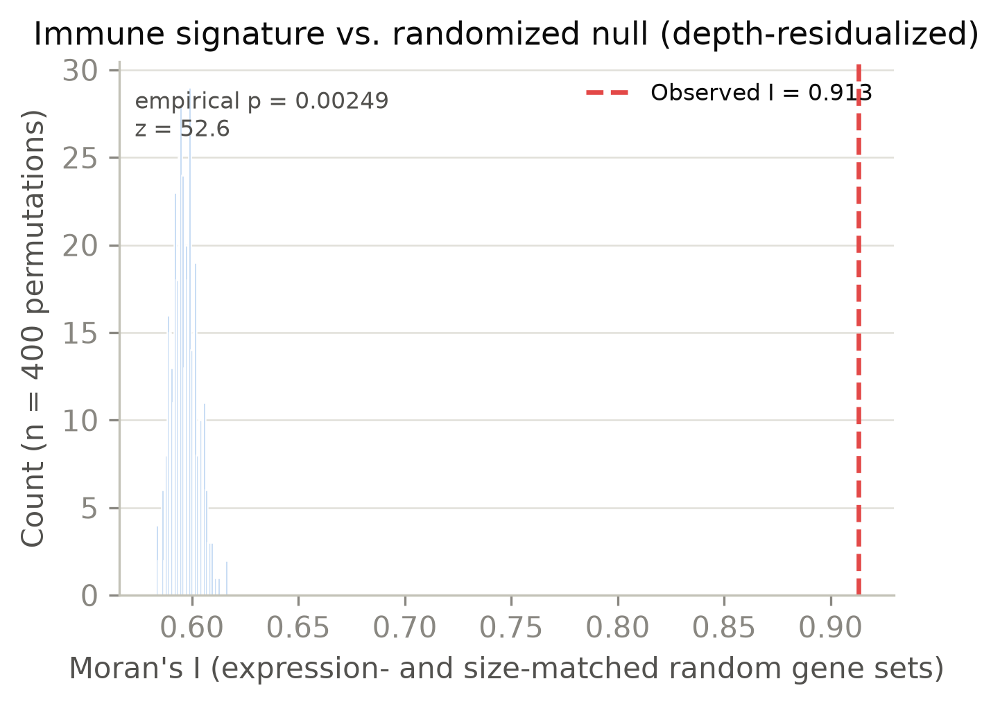
Other items in this section
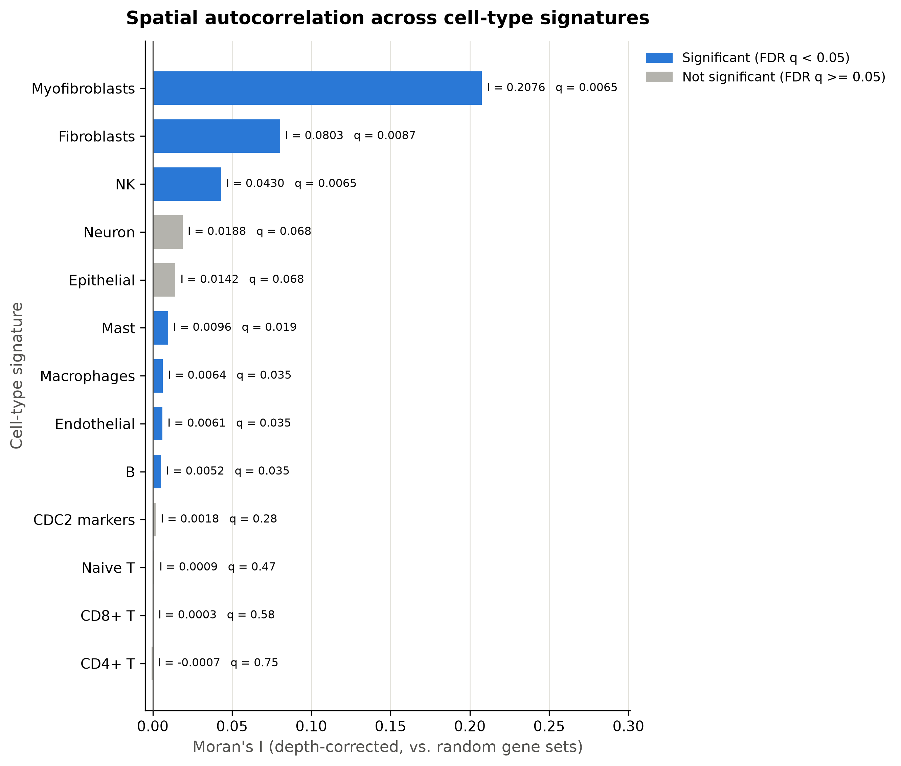
What it does. Defines where each marker set is enriched, checks that region and background are comparable in depth, and finds genes that mark the region. Two region definitions, one block each:
| Region | Definition | Claim per bin |
|---|---|---|
{celltype}_nichestrategy 1 | Top 5% of bins by the smoothed signature score. | "This bin shows coordinated, panel-wide enrichment." High confidence; used for the cell-type annotation (section 4). |
{celltype}_enriched_regionstrategy 2 | Bins where at least one marker (default) is detected. | "This bin shows any signal from the panel." High sensitivity, weak per-bin claim; often covers most of the tissue. |
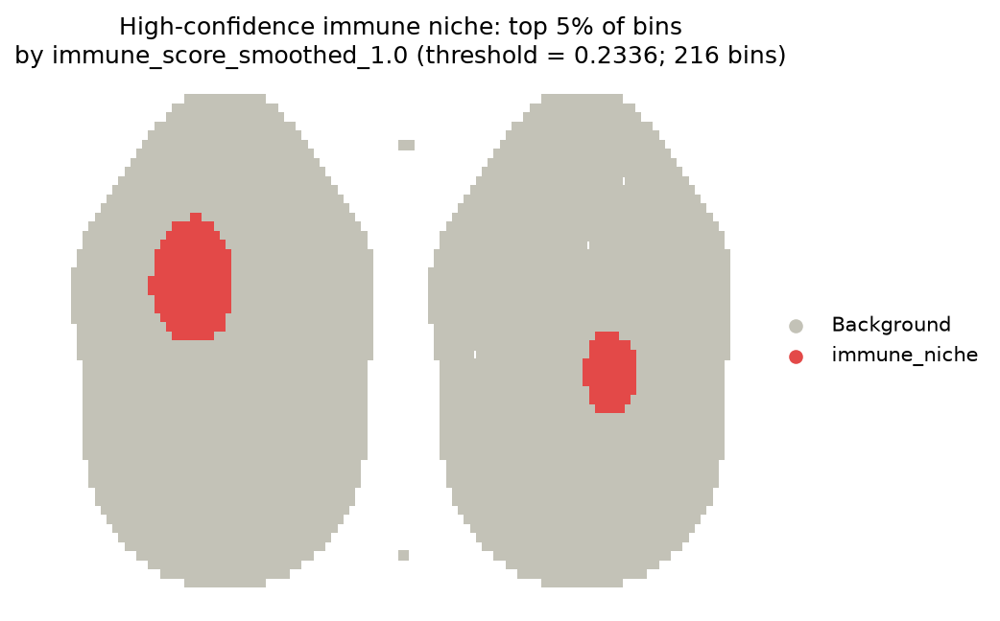
{name}_depth_check.csv compares median total counts and genes of region vs background and reports the depth AUROC. Marker-defined regions are nearly always deeper (more reads → more markers detected). Bins are then matched within depth deciles; {name}_depth_check_after_matching.csv should show AUROC ≈ 0.5. Only the matched bins enter the DE, so DE genes cannot be explained by depth. A warning of fewer than 50 matched bins per group means the region covers almost everything of comparable depth - the region definition is too permissive for DE.
Wilcoxon rank-sum per gene, Benjamini-Hochberg across genes; a gene is significant at adjusted p < 0.05 and |log2 fold change| > 0.5. {name}_de_genes.csv has every gene; {name}_de_top20.csv the top 20 up- and top 20 down-regulated significant genes.
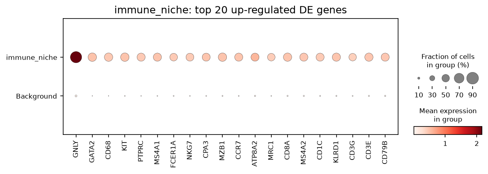
What it does. Labels every bin from the high-confidence niches (strategy 1). Bin data hold several cells per bin, so a bin can belong to several niches:
| Bin is in … | Label |
|---|---|
| one niche | that cell type, e.g. NK - kept however few bins it has |
| several niches | names joined in the order of the marker sets, e.g. NK_Neuron, B_NK_Neuron |
| several niches, combination rare | Mix - bins annotated with several cell types whose combination has fewer than 100 bins (annotation.min_bins) |
| no niche | Structural Base |
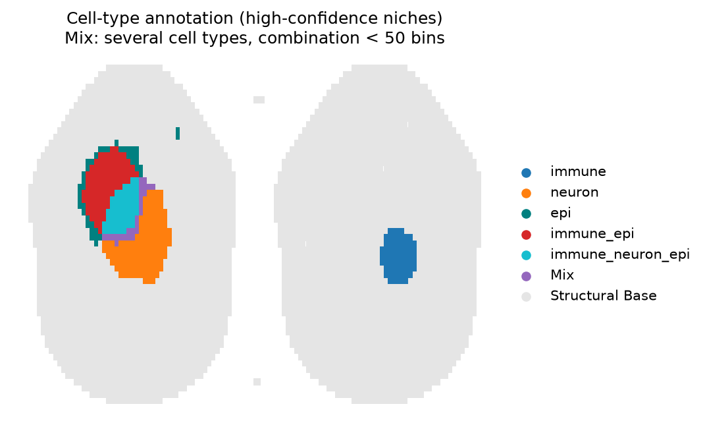
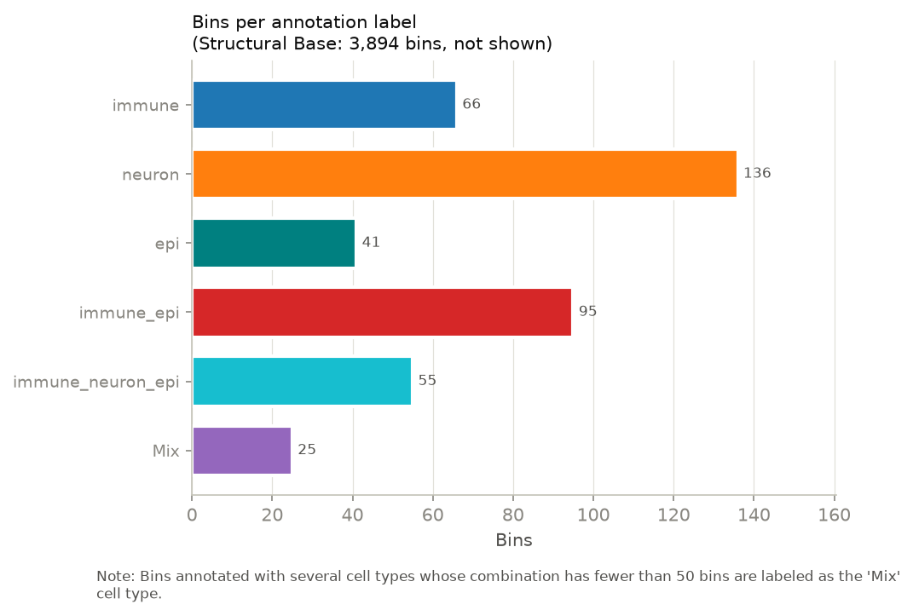
Plots show at most 15 colours. With many marker sets there can be dozens of combinations, and more than about 15 colours cannot be told apart. The map and the bar chart keep a colour for the largest labels by number of bins and plot all smaller labels as Mix, so Mix takes one of the 15 colours (annotation.max_plot_labels in the config). In the plots, Mix therefore holds the rare combinations (fewer than 100 bins) and every label below the plotting cutoff. The cutoff - the bin count of the smallest label with its own colour - is printed, stated in the plot titles and in the report ("Plots show the 14 largest labels in colour (≥ X bins each); the other N labels are plotted as Mix"). Nothing is lost: every label stays in the saved h5ad.
Files: celltype_annotation_counts.csv (bins per label, rank, plotted yes/no, plotted_as; for Mix, which combinations were merged into it), and in the saved h5ad obs["celltype_annotation"] (all labels), obs["celltype_annotation_plot"] (as plotted, smaller labels as Mix) and obs["celltype_combination"] (the full combination, also for Mix bins). To look at labels that were not plotted, e.g.:
sc.pl.embedding(adata, basis="spatial", color="celltype_annotation", groups=["NK_Naive_T", "Mast_B"])
What it does. For a pair of marker sets A and B, tests whether their depth-corrected scores are high in the same places. It is a co-localization test, not an interaction test: two cell types can share a niche because they take part in the same process, without direct contact.
| Item | Meaning |
|---|---|
| I_AB | Bivariate spatial correlation of the two standardized, depth-corrected scores over each bin and its 8 neighbours. > 0 = hotspots of A sit in or next to hotspots of B; < 0 = they avoid each other. Genes shared by both panels are removed first (they would correlate the scores by construction). |
| Two nulls (swap A, swap B) | Replace panel A (then B) by matched random gene sets and recompute I_AB. Both nulls must be beaten - one alone can be fooled, e.g. when a strongly expressed panel lowers every other gene after normalization. |
| p_colocalized, p_segregated | Empirical p-values in each direction; the larger of the two nulls is kept. q = FDR across the pairs of the run (n_tested). |
| Verdict | CO-LOCALIZED / SEGREGATED (significant as for PASS), NOT_DISTINGUISHABLE_FROM_RANDOM. I_AB_no_depth_correction is shown for reference. |
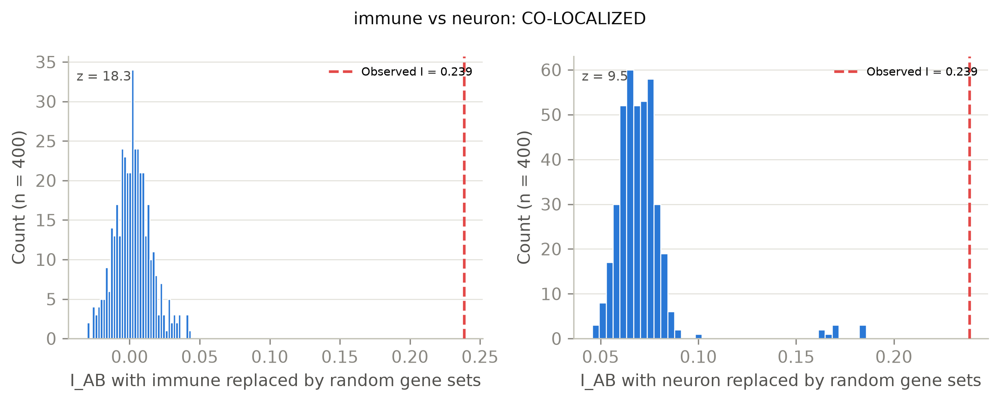
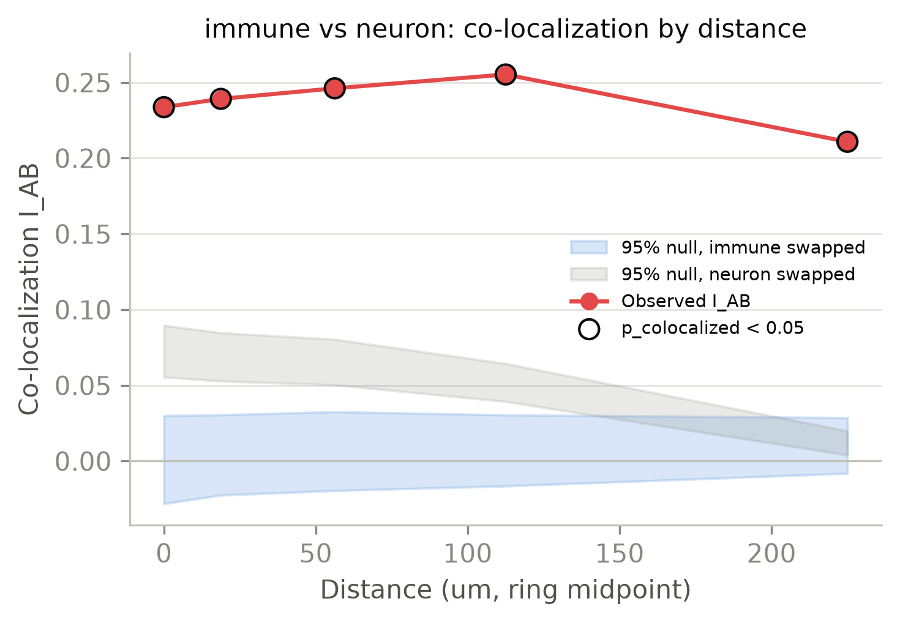
colocalization_technical_controls.csv, only with sections.tissue_qc). The same test with each section's mean removed. A pair that stays CO-LOCALIZED is not explained by one section being brighter overall; a pair that drops out was driven by section differences.Present after running marqual-st gene-pairs (files in figures/gene_pairs/). It follows up specific genes, e.g. which genes drive a cell-type co-localization. Each pair gets:
| Result | How to read it |
|---|---|
| Bivariate Moran's I | Depth-corrected expression of gene x against the neighbourhood average of gene y, both directions (I_xy ≠ I_yx). Tested with 999 permutations of bin locations; FDR across directions. In the Overview, a significant positive I reads CO-LOCALIZED. |
| Correlation | Spearman ρ (primary; robust to zero-inflated expression) and Pearson r, bin by bin, without space and without depth correction. Read by magnitude - with 105 bins tiny correlations are "significant". ρ ≈ r: broad, consistent association. ρ ≫ r: the genes share bins but their levels do not align. r ≫ ρ: driven by a few high-expression bins. |
| Co-expression niche | Bins where both genes are detected vs the rest, with the same depth check, depth matching, DE tables and top-20 dot plot as section 3. |
Every file in the folder that is not placed above - raw null draws, extra plots, files from earlier runs. Nothing is silently dropped. Result files of marker sets that are not in the current run's index table are left out of the Moran's I summary, so its FDR matches the run.
n_tested.| File (in figures/) | Section | Content |
|---|---|---|
technical_qc_summary.csv | 1 | Bins, depth, sections, strays |
section_depth_summary.csv, stray_pieces.csv | 1 | Depth per section; stray pieces |
{celltype}_null_test_summary.csv | 2 | Observed I, null mean/SD, z, empirical p (raw and _resid), depth R² |
all_celltypes_moran_index_table.csv | 2 | All marker sets, q-values, n_tested, simulation-noise range of p, qc_verdict |
morans_i_summary_table.csv | 2 | Analytic and random-gene-set results side by side |
total_counts_confound_baseline.csv | 2 | Moran's I of total counts |
{name}_depth_check[_after_matching].csv | 3 | Depth of region vs background, AUROC |
{name}_de_genes.csv, {name}_de_top20.csv | 3 | All DE genes; top 20 up and down |
{name}_de_top20_dotplot.png/.pdf | 3 | Dot plot of the top up-regulated genes |
celltype_annotation_counts.csv | 4 | Bins per label; combinations merged into Mix |
{A}_vs_{B}_colocalization_summary.csv | 5 | I_AB, nulls, z, p, verdict for one pair |
all_pairs_colocalization_table.csv | 5 | All pairs, q-values, n_tested, verdict_fdr |
{A}_vs_{B}_colocalization_by_distance.csv | 5 | I_AB per distance ring |
colocalization_technical_controls.csv | 5 | Within-section control |
gene_pairs/{gene1}_{gene2}_* | 6 | Bivariate Moran's I, correlation, co-expression niche DE |
Settings (sections, marker sets, celltype_pairs, annotation, filters) are in params.csv and marker_sets.csv (copies of the settings as run: params_used.csv, marker_sets_used.csv). Thresholds: FDR q < 0.05 for every verdict; 1,000 random gene sets (statistics.n_null); DE adjusted p < 0.05 and |log2FC| > 0.5; niche = top 5% of the smoothed score.